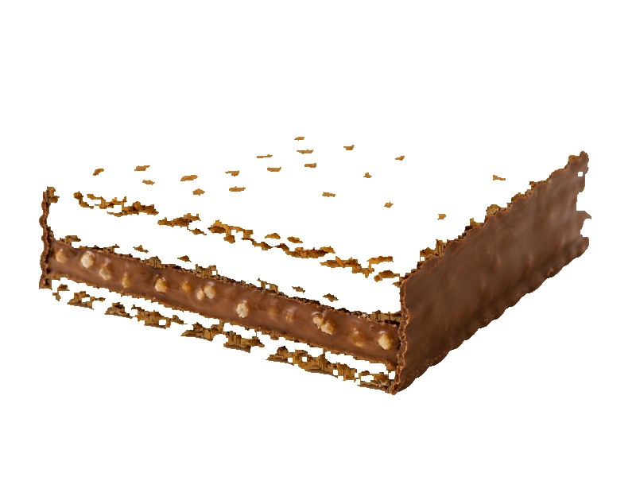

Batony
Knoppers
Knoppers: 8 g białka, 550 kcal, 50 g węglowodanów i 34 g tłuszczu na 100 g. Kategoria: Batony.
Kalorie550 kcalna 100 g
Białko / proteiny8 g
Węglowodany50 g
TĹ‚uszcz34 g
Cena (szac.)~1,80 złza 100 g
Ceny zaktualizowano: maj 2026 (szacunek — ceny w popularnych supermarketach)
Porcja: sztuka (25g)
| Kalorie | 138 kcal |
|---|---|
| Białko | 2 g |
| Węglowodany | 12.5 g |
| TĹ‚uszcz | 8.5 g |
| Cena (szac.) | ~0,45 zł |
Szczegółowe składniki odżywcze na 100 g
| Wartość energetyczna (kalorie) | 550 kcal |
|---|---|
| Białko (proteiny) | 8 g |
| Węglowodany | 50 g |
| TĹ‚uszcz | 34 g |
| TĹ‚uszcze nasycone | 18 g |
| TĹ‚uszcze nienasycone | 16 g |
| Witaminy i minerały | Magnez, Żelazo, Wapń |
| Współczynnik kcal / 1 g białka | 68.8 |
| Cena produktu (szac. za 100 g) | ~1,80 zł |
| Cena za 100 g białka (szac.) | ~22,50 zł |